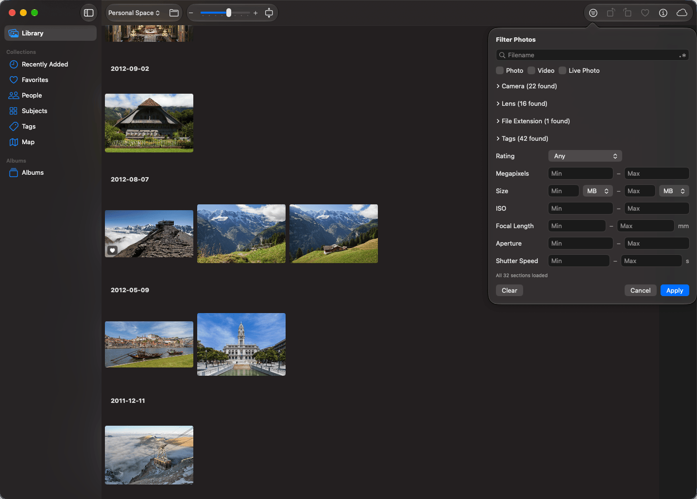
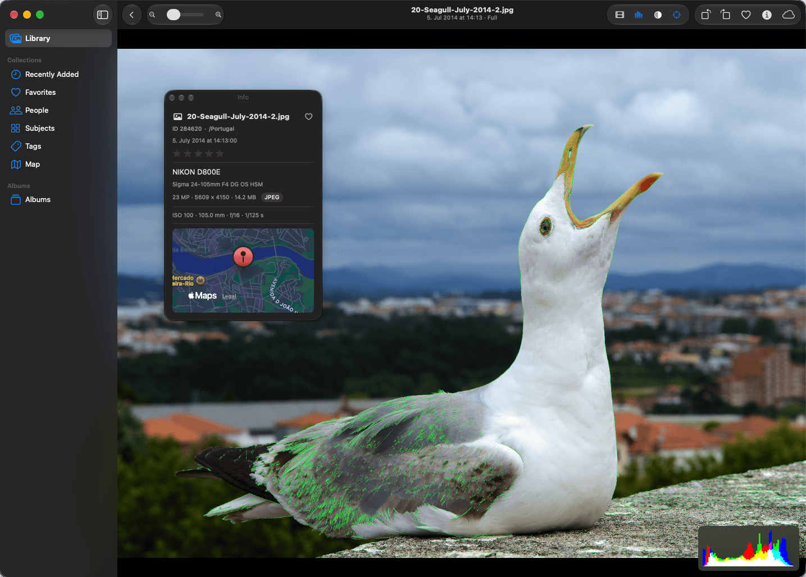
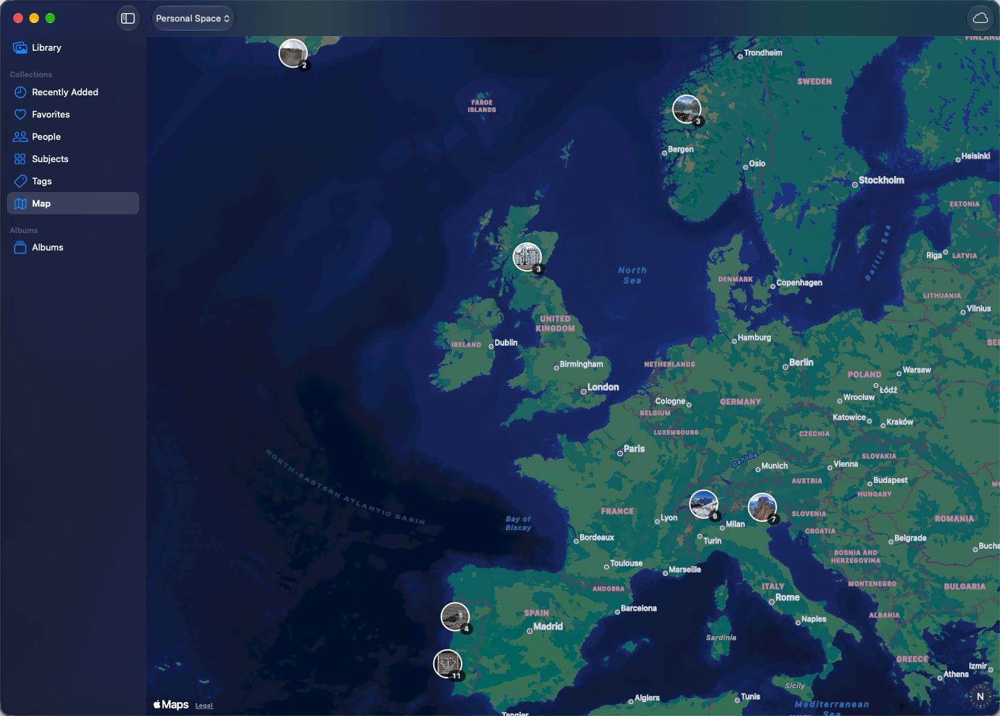

Cirrus Photos
A native macOS app for browsing the Synology Photos library on your own NAS. It keeps metadata and thumbnails on your Mac, so large libraries open quickly and stay usable offline or on a slow connection.
Alpha software. The app is signed but not notarized, so macOS asks for an extra step on first launch.
Screenshots



Features
- Cached-first browsing of Personal Space and Shared Space. Cached content stays visible when the NAS is slow or unreachable.
- Day-grouped timeline with a date navigator, plus folders, Favorites and Recently Added.
- Albums, including shared albums, with sharing settings for albums you own.
- People, Subjects and Tags.
- Map of geotagged photos, with clustering.
- Viewer for photos, videos and Live Photos, with zoom, filmstrip, histogram, highlight peaking and focus edges.
- Filter by filename, camera, lens, tags, rating and other metadata, using cached data.
- Favorites, ratings, tags, rotation and deletion.
- Download originals, drag photos out to Finder, and upload by dragging files in.
- Multiple accounts, including two-factor sign-in.
Requirements
- macOS 27 or later
- A Synology NAS running Synology Photos, reachable over HTTPS